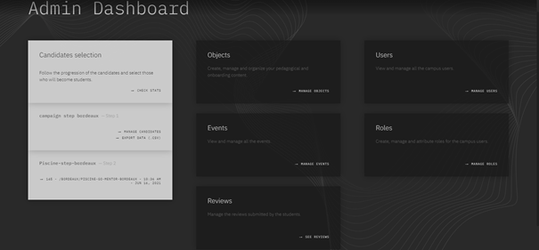
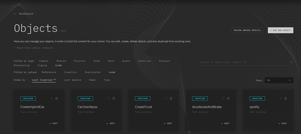
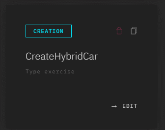
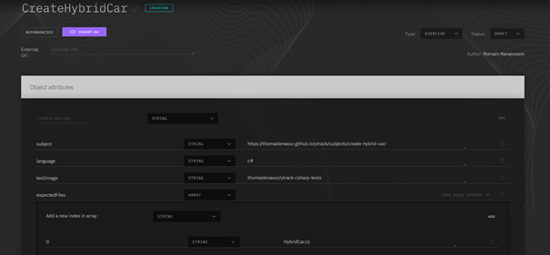
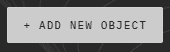
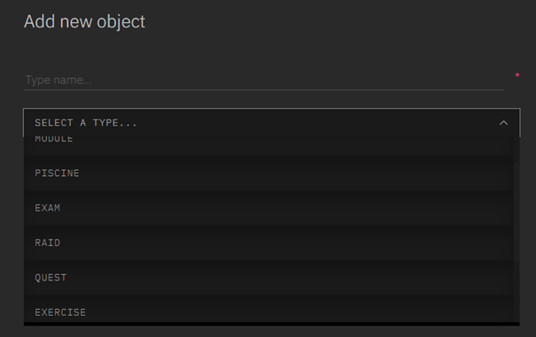
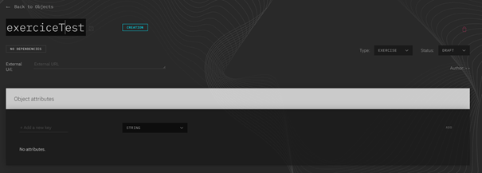

Administration Ytrack

Dashboard
Après avoir vu Ytrack côté étudiant, nous allons voir Ytrack côté Admin.
Voici à quoi ressemble le dashboard des admins :
Les deux éléments les plus importants de ce dashboard (ceux que l’on va traiter) sont « Objects » et « Event ».
La partie « Objects » sert à créer et gérer les exercices, les quêtes, les piscines…
Objets
Voici la page Objects :
Sur cette page, on peut gérer tous les objects (les éléments en bas).
Zoomons un peu sur un de ces éléments :
Sur cet élément, on peut voir le nom de l’objet (ici CreateHybridCar), le type d’objet (ici exercice), on peut voir si l’objet est l’original ou un dupliqué, (ici CREATION donc l’objet original). La poubelle rouge sert à supprimer l’objet, les deux cartes en haut à droite servent à dupliquer l’objet. Et enfin le bouton EDIT qui sert à modifier l’objet.
EDIT d'objets
Voyions sur quelle page on arrive lorsque l’on clique sur le bouton EDIT :
On a toujours le nom de l’objet mais également la personne qui a créé l’objet (ici Romain Ranaivoson), et selon le type d’objet la page afficher sera différente. Ici on peut voir la page EDIT d’un exercice.
Sur celle-ci, on peut voir différents attributs pour l’objet :
- subject, qui est le lien vers le sujet de l’exercice
- language, qui est le langage à utiliser pour l’exercice
- testImage, qui est le nom de l’image Docker
- expectedFiles, qui est le nom de fichier attendu
Ajout d'objet
Pour créer un objet, on retourne sur le dashboard et on clique sur « + ADD NEW OBJECT ».
Ensuite, on arrive sur une page sur laquelle on choisi le nom et le type de l’objet.
On arrive ensuite sur la page EDIT de l’objet sur laquelle on va devoir ajouter les attributs de l’objet en cliquant sur le « ADD ».
C’est terminer pour la partie Admin de Ytrack.